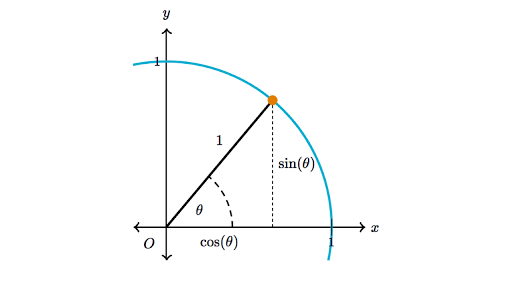
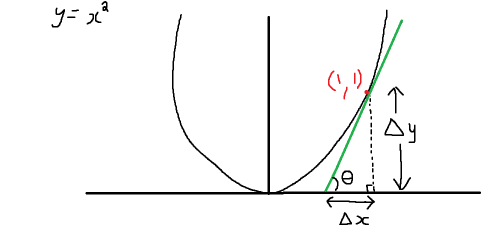

Trigonometri
Basit bazı temel bilgilerin üzerinden geçelim. Sinüs, kosinüs, tanjant nedir? Karşı, komşu, hipotenüs kullanan bazı tanımlar akılda kalmış olabilir, mesela alttaki açı $\alpha$ ve dik üçgenler için, karşı bölü hipotenüs sinüs, komşu bölü hipotenüs kosinüs, karşı bölü komşu tanjant.

Aslında tanjant'ın esas tanımı sinüs bölü kosinüs,
$$ \tan \alpha = \frac{\sin\alpha}{\cos\alpha} = \frac{a / c}{b / c} = \frac{a}{b} $$
bölen $c$ iptal olduğu için geri kalanlar karşı bölü komşu.
Pitagor Kanunu
$a^2 + b^2 = c^2$
İspat
Dik üçgenimizi alıp yanyana koyarak bir kare oluşturuyoruz, artık hem dış çeperde bir kare var, ayrıca iç kısımda da bir kare var.
Bu karenin kenarları $b-a$ büyüklüğünde, alanı tabii ki $(b-a)^2$. Büyük karenin alanı $c^2$. Ama eğer büyük karenin alanını görülen beş tane parçayı toplayarak elde edebilirsek, Pitagor formülüne erisebiliriz.
$$ (b-a)^2 + 4 \frac{ab}{2} = (b-a)^2 + 2 ab = b^2 -2ab + a^2 + 2ab = a^2 + b^2 $$
Büyük kare eşitliğinden bu alan $c^2$'dir demiştik, o zaman
$$ c^2 = a^2 + b^2 $$
İspatı tamamlamış olduk.
Şimdi Pitagor kullanarak önemli bir trigonometrik eşitlik elde edeceğiz, alttaki dik üçgeni oluşturursak, $\theta$ ne olursa olsun mavi renkli çemberin yarıçapı, ve dik üçgenin hipotenüsü 1 olacaktır, ve $\sin\theta = a / 1$ olduğu için $\sin\theta = a$, yani karşı kenar $\sin\theta$, komşu kenar $\cos\theta$.

Bu kenar bilgilerine Pitagor üzerinden
$$ a^2 + b^2 = 1^2 $$
$a,b$ yerine koyarsak,
$$ \cos^2\theta + \sin^2\theta = 1 $$
Radyan
Acıları 0 ile 360 arasında temsil edebildiğimiz gibi radyan (radian) olarak ta temsil edebiliriz. Zaten radyan yaklaşımı çemberle alakalı her türlü hesaba doğal olarak dahildir; bir çemberin çevresi $2 \pi \cdot r$ olarak hesaplanır, ki $r$ yarıçaptır, buradaki $2 \pi$ tüm 360 dereceye tekabül eden radyan açısı olarak görülebilir, yani 360 = 6.28.. diye gider, $\pi$ sayısının iki katıdır.
Buradan hareketle çemberin ufak bir parçasının uzunluğunu radyan açısı ile bulabiliriz, eğer tüm çevre $2 \pi r$ ise 45 derecelik parçanın uzunluğu nedir? $\pi / 4 \cdot r$ tabii ki, yani $\pi / 4$ radyan açısı ile yarıçap çarpılır.
Zaten tüm yaygın kullanılan matematiksel yazılım paketleri de trigonometrik
fonksiyonları için radyan açı olarak parametre beklerler. Mesela numpy
ile,
np.cos(6.28)
Out[1]: 0.9999949269133752
np.sin(6.28)
Out[1]: -0.0031853017931379904
Tam sıfır çıkmadı sıfıra yakın çünkü $\pi$'nin iki katını noktadan sonra iki basamağa yuvarladık.
np.sin(6.28318)
Out[1]: -5.307179586686775e-06
Aynı paketlerde dereceden radyana geçiş için fonksiyonlar vardır,
b1nnp.deg2rad(180)
Out[1]: 3.141592653589793
Eğer küçük açılardan bahsediyorsak ufak çember parçalarını hayal ederek bazı yaklaşıklamalar mümkündür [2]. Alttaki ufak $\theta$ açısına bakalım,

Görülen çemberin ufak $s$ parçası radyan ile $s = A \theta$ olur, değil mi? Buradan ilerlersek ve çok ufak açılar için $s \approx O$ ve $H \approx A$ olmasından hareket ederek bazı ilginç sonuçlara varacağız.
Tanjant karşı bölü komşudur, resimde bu $O / A$, fakat küçük açı durumunda $O \approx s$, o zaman,
$$ \tan \theta = \frac{O}{A} \approx \frac{s}{A} = \frac{A\theta}{A} = \theta $$
Yani ufak acı sözkonusu ise $\tan \theta \approx \theta$! Böyle durumlarda sadece karşı bölü komşu bölüm hesabı yaparak radyan üzerinden $\theta$ açısını bulabiliyoruz!
Devam edelim, sinüs hesabı karşı bölü hipotenüs, yani $O / H$, küçük açı durumunda $H \approx A$, o zaman
$$ \sin \theta = \frac{O}{H} \approx \frac{O}{A} \approx \frac{s}{A} = \frac{A\theta}{A} = \theta $$
Aynı $\theta$ sonucuna eriştik.
Üstteki geometrik bir yaklaşımdı, Calculus kullanan bir diğer ispat altta bulunabilir.
Diğer Trigonometrik Eşitlikler
Toplam Formülleri
Açı toplama eşitliklerine bakalım. Bu eşitlikler
$$ \cos(A+B) = \cos A \cos B - \sin A \sin B $$
$$ \sin(A+B) = \sin A \cos B + \cos A \sin B $$
Ispata gelelim. Önce Euler eşitliği,
$$ e^{i\theta} = \cos\theta + i\sin\theta $$
Şimdi diyelim ki $\theta = A+B$, o zaman [1],
$$ \cos(A+B) + i\sin(A+B) = e^i(A+B) $$
$$ = e^{iA} \cdot e^{iB} $$
$$ = (\cos A + i\sin A) (\cos B + i\sin B) $$
Çarpımı açarsak,
$$ = \cos A \cos B + i\cos A \sin B + i\sin A \cos B - \sin A \sin B $$
Dikkat son terimdeki eksi işaretin sebebi $i \cdot i = -1$ olması çünkü hayali sayı $i$'nin tanımı $i = \sqrt{-1}$.
Bir gruplama yapalım,
$$ = \cos A \cos B - \sin A \sin B + i (\cos A \sin B + \sin A \cos B ) $$
Buraya nereden geldiğimizi hatırlayalım, üstteki ifadenin $\cos(A+B) + i\sin(A+B)$'e eşit olması gerekir. Eşitlik ne demektir? Üstteki formülün reel kısmını $\cos(A+B) + i\sin(A+B)$'in reel kısmına, hayali kısmının yine aynı formülün hayali kısmı ile eşit olması demektir. O zaman ispat tamamlanmış oldu.
Tanjant için ilginç bir eşitlik,
$$ \tan (\alpha + \beta) = \frac{\tan\alpha + \tan\beta}{1 - \tan\alpha \tan\beta} $$
Çıkartma için benzer bir eşitlik geçerli,
$$ \tan (\alpha - \beta) = \frac{\tan\alpha - \tan\beta}{1 + \tan\alpha \tan\beta} $$
İspat [3] oldukça mekanik şekilde yapılabilir, direk tanjant tanımı ile başlayalım,
$$ \tan A = \frac{\sin A}{\cos A} $$
$$ \tan (\alpha + \beta) = \frac{\sin (\alpha + \beta)}{\cos (\alpha + \beta)} $$
Esitligin sag tarafi su sekilde genisletilebilir,
$$ \frac{\sin (\alpha + \beta)}{\cos (\alpha + \beta)} = \frac{\sin\alpha \cos\beta + \cos\alpha + \cos\alpha \sin\beta } {\cos\alpha \cos\beta - \sin\alpha - \sin\alpha \sin\beta} $$
Sağ tarafı $(\cos\alpha)(\cos\beta)$ ile bölelim, bu bize
$$ \dfrac{\dfrac{\sin\alpha\cos\beta}{\cos\alpha\cos\beta} + \dfrac{\cos\alpha\sin\beta}{\cos\alpha\cos\beta}} {\dfrac{\cos\alpha\cos\beta}{\cos\alpha\cos\beta} - \dfrac{\sin\alpha\sin\beta}{\cos\alpha\cos\beta}} $$
$$ = \frac{\tan\alpha + \tan\beta}{1 - \tan\alpha \tan\beta} $$
Böylece ilk eşitliğe erişmiş olduk, eski işaretli versiyona aynı yaklaşımla erişilebilir.
Çift Açı Formülleri
İspatladığımız
$$ \cos(A+B) = \cos A \cos B - \sin A \sin B $$
formülünde eğer $B$ yerine $A$ kullanırsak, o zaman $2A$ elde ederiz, bunun açılımı neye eşit olur?
$$ \cos(A+B) = \cos(A+A) = \cos(2A) = \cos A \cos A - \sin A \sin A $$
$$ \cos(2A) = \cos A^2 - \sin A^2 $$
Ayni teknigi $\sin(A+B)$ uzerinde uygularsak,
$$ \sin(A+B) = \sin(A+A) = \sin(2A) = \sin A \cos A + \cos A \sin A $$
Bu iki terim birbirinin aynısı, o zaman
$$ \sin(2A) = 2\sin A \cos A $$
Şimdiye kadar elde ettiğimiz
$$ \cos^2\theta + \sin^2\theta = 1, \quad \cos^2\theta - \sin^2\theta = \cos2\theta $$
formüllerinden ek eşitlikler türetmek mümkün. Eğer iki formülü toplarsak
$$ 2\cos^2\theta = 1 + \cos2\theta $$
eğer 2'inciyi 1'inciden çıkartırsak,
$$ 2\sin^2\theta = 1 - \cos2\theta $$
elde ederiz.
Küçük Açı Yaklaşıklaması (Small Angle Approximation)
Bazı fizik kitaplarında ve eğer ufak açılar sözkonusu ise bazen $\sin\theta \approx \theta$ geçişi yapıldığını görüyoruz. Bu nereden geliyor?
Sinüs fonksiyonu üzerinde Maclaurin açılımı [2] yaparsak (yani sıfır etrafında Taylor açılımı),
$$ \sin\theta = \theta - \frac{\theta^3}{3!} + \frac{\theta^5}{5!} - \frac{\theta^7}{7!} + ... $$
Radyan olarak düşünürsek eğer $\theta$ çok küçük, yani sıfıra yakın ise küpü alınan çok küçük değer daha da küçülecektir, o zaman ikinci terim dahil olmak üzere tüm diğer terimler yok sayılabilir,
$$ \sin\theta \approx \theta $$
Dahası da var! Çok ufak bir açının kosinüsü 1'e yakındır, ve tanjant sinüs bölü kosinüs olduğu için bölen 1 iptal edilir, geriye kalanlar,
$$ \tan\theta \approx \sin\theta \approx \theta $$
Faydalı olabilir!
Sayısal olarak kontrol edelim,
theta = 0.01
print (np.sin(theta))
print (np.tan(theta))
0.009999833334166664
0.010000333346667207
Üstteki numaralar bazen ilginç şekillerde karşımıza çıkabilir, mesela bir eğrinin eğiminin ne olduğunu hatırlarsak,

Eğim $\Delta y / \Delta x$, ki bu yaklaşık olarak türevin ta kendisi değil midir, yani $dy / dx$? Evet. Aynı şekilde üstte gördüklerimizden hareketle bu eğime $\tan\theta$ diyebiliriz, ve ufak açılar sözkonusu ise $\tan\theta \approx \theta \approx dy / dx$!
Ufak sayılar sözkonusu ise $\arctan$ için benzer bir durum geçerli, ufak değerlerde $\arctan(x) \approx x$. İspat için $\arctan$ Taylor açılımına bakalım,
$$ \arctan(x) = x - \frac{x^3}{3} + \frac{x^5}{5} + ... $$
Ufak $x$ var ise bu durumda $x^3$ ve $x^5$ gibi üstel hesaplar daha da ufalacaktır, yaklaşık olarak sıfıra yakın kabul edilebilirler. O zaman üstteki formülde kesirli terimler yok sayılabilir, sonuç olarak $\arctan(x) \approx x$.
Ters Trigonometrik Formüller (Inverse Trigonometric Functions)
$\cos x$ için $\cos^{-1} x$ ya da $\arccos x$ ile gösterilen ters trigonometrik formüldür. $\sin x$ ve $\tan x$ için aynı şekilde.
Bu ters fonksiyonların türevi nasıl alınır? $\theta = \tan^{-1}x$ örneğinde görelim. Elde etmek istediğimiz $d\theta/dx$.
Eğer
$$ \tan^{-1}x = \theta$$
ise, o zaman
$$ \tan\theta = x $$
$x$'i aslında $\theta$'ya bağlı bir $x(\theta)$ fonksiyonu olarak görebiliriz. Eğer iki tarafın $\theta$'ya göre türevini alırsak
$$ \frac{dx}{d\theta} = \sec^{2}\theta $$
Bizim istediğimiz bunun tersi, o zaman bölümü tersine çevirelim
$$ \frac{d\theta}{dx} = \frac{1}{\sec^{2}\theta} $$
Pitagor Eşitliklerinden bildiğimize göre
$$ \sec^{2}\theta = \tan^{2}\theta + 1 $$
Yerine geçirelim
$$ \frac{d\theta}{dx} = \frac{1}{\tan^{2}\theta + 1} $$
İlk başta tanımladığımıza göre $\tan\theta = x$, bunu da üstte yerine koyalım
$$ = \frac{1}{x^2 + 1} $$
Kaynaklar
[1] Blackpenredpen, Angle Sum formula, proof by complex number, https://www.youtube.com/watch?v=OcXqF8l2crI
[2] Wikipedia, Small angle approximation, https://en.wikipedia.org/wiki/Small-angle_approximation
[3] Math Guide, https://www.mathguide.com/lessons2/SDAT.html
Yukarı